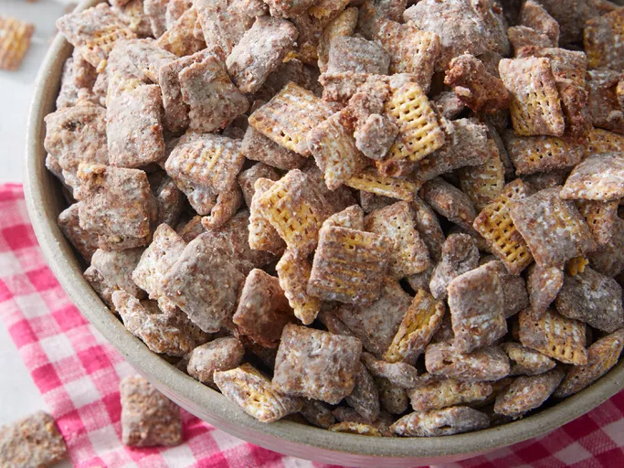

Puppy Chow Recipe

Ingredients
- 3 cups Rice Chex cereal
- 3 cups Corn Chex Cereal
- 1 cup semisweet chocolate chips
- 1/2 cup peanut butter
- 1/4 cup butter or margarine
- 1 teaspoon vanilla
- 1 1/2 cups powedered sugar
Steps
- Gather all ingredients
- Combine all cereals in a large bowl; set aside
- Place chocolate chips, peanut butter, and butter
in a 1-quart microwave-safe bowl. Microwave,
uncovered, on high for 1 minute, then stir.
Continue warming mixture until smooth and combined,
about 30 seconds longer. Stir in vanilla
- Place chocolate mixture over cereal
and stir until evenly coated. Transfer to a 2
gallon resealable plastic bag.
- Add powedered sugar to the bag and seal;
shake until well-coated.
- Evenly spread cereal out onto waxed paper
to cool.
- Enjoy!